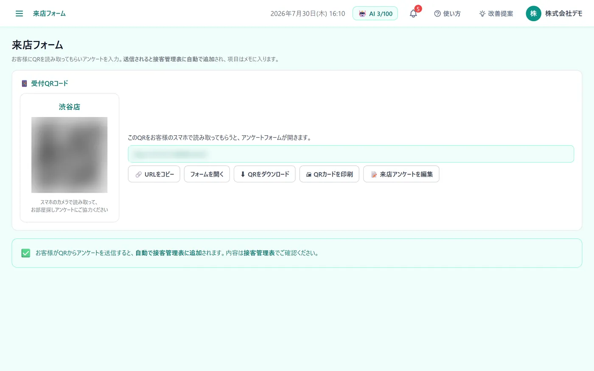
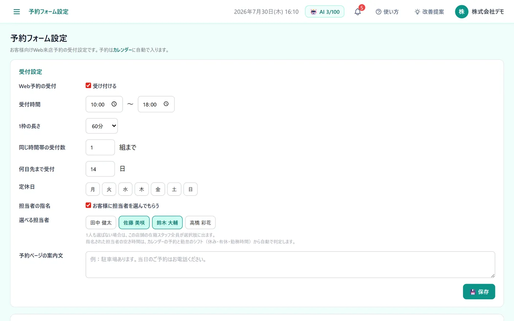

こんな困りごとに
- 紙のアンケートや申込書を、あとから入力し直している
- 電話で受けた来店予約を、カレンダーに書き写している
- 転記のたびに、書き間違いや入力漏れが起きる
この機能でできること
- 来店アンケート（QR）の回答を、接客管理表に自動で追加
- Web来店予約を、カレンダーに自動で登録
- 入居申込フォームの内容と身分証などの添付を、申込管理表と接客管理表に自動で追加
メニューの場所左メニュー「事務作業 › 来店フォーム／予約フォーム／申込フォーム」
使い方（3ステップ）
-
1
QRを受付に置く
左メニュー「事務作業 › 来店フォーム」で受付用のQRコードを印刷して、受付に置きます。お客様がスマホで読み取ってアンケートを送ると、接客管理表に自動で追加され、回答はメモに入ります。

-
2
来店予約の受付を始める
「予約フォーム」で受付時間・1枠の長さ・定休日などを決めて保存し、予約ページのURLやQRをホームページ・LINE・メールで案内します。入った予約は、カレンダーに自動で入ります。担当者ごとの予約URLを送れば、その担当者の空き時間だけが並びます。

-
3
申込フォームで受け付ける
「申込フォーム」の個人用・法人用のQRやURLをお客様に送ります。送信された内容は、申込管理表と接客管理表に自動で追加されます。身分証などの写真も、お客様がスマホで撮ってそのまま添付できます。
よくある質問
聞きたい項目は変えられますか？
変えられます。来店アンケートは「来店アンケートを編集」から項目を変更できます。申込フォームは「個人フォームを編集」「法人フォームを編集」から、それぞれ項目を自由に追加・削除できます。
自社ホームページの問い合わせフォームも取り込めますか？
取り込めます。「メール自動取込」の画面で専用のタグをコピーし、ホームページに1行貼るだけで、送信された内容が反響管理表（媒体は自社HP）に入ります。フォームそのものを作り直す必要はありません（別のドメインの枠（iframe）で表示しているフォームは取り込めないため、その場合はメール経由で取り込みます）。